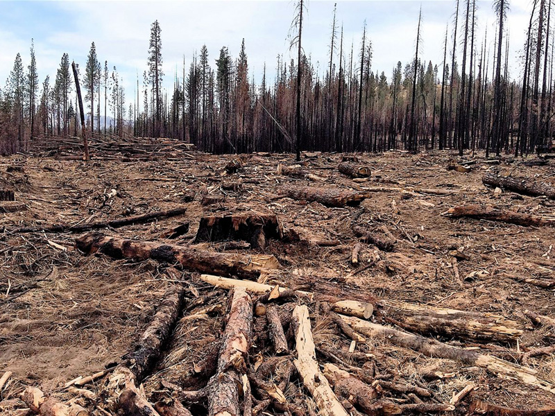

Why are they endangered?
As forest dwelling primates, orangutans are entirely dependent on the forest for their survival. Unfortunately, Indonesia and Malaysia have some of the highest rates of deforestation in the world, and logging, both legal and illegal. It is believed up to 1,000 orangutans are also killed every year, either for the pet trade, for consumption or as agricultural pests.Â
a) Palm oil plantations
The biggest threat to orangutan populations is undoubtedly the increasing expansion of palm oil plantations. Orangutan’s diets consist mainly of fruit and, as such, they are found predominantly in fruit rich lowland forests. Unfortunately, this land is often the most attractive for palm oil companies. Current practice involves clear cutting, stripping the forest of all its timber and selling it off. Fires are then set, to rid the land of any wood debris, clear the undergrowth and provide the soil with fertilizing ash. As fires burn, all wildlife either dies, or flees the area, where it will often either starve to death, or be killed by neighboring plantation workers as pests.
b) Legal and illegal logging

Sawmill operators frequently purchase and process woods from both legal and illegal sources, and it is estimated that over 70% of wood products exported out of the country are from illegal wood sources (EIA, 2006). The sheer amount of logging in Malaysia is simply unsustainable. Such logging practices not only indiscriminately remove the trees that orangutans depend on, they also threaten the existence of thousands of other plants, and animals.
c) Hunting
Hunting and the use of orangutans for sustenance has always been a factor in Malaysia. Traditional hunting by indigenous people has been responsible for a number of local extinctions. Although hunting is less of an issue today, a recent survey conducted in Kalimantan suggests up to 1,000 orangutans are still being lost every year to local hunting pressures (Meijaard, 2010), and research in 2006 suggest that if local people no longer hunt orangutans, it is because they are now so rarely seen, rather than because of any change in beliefs (Marshall et al, 2006).